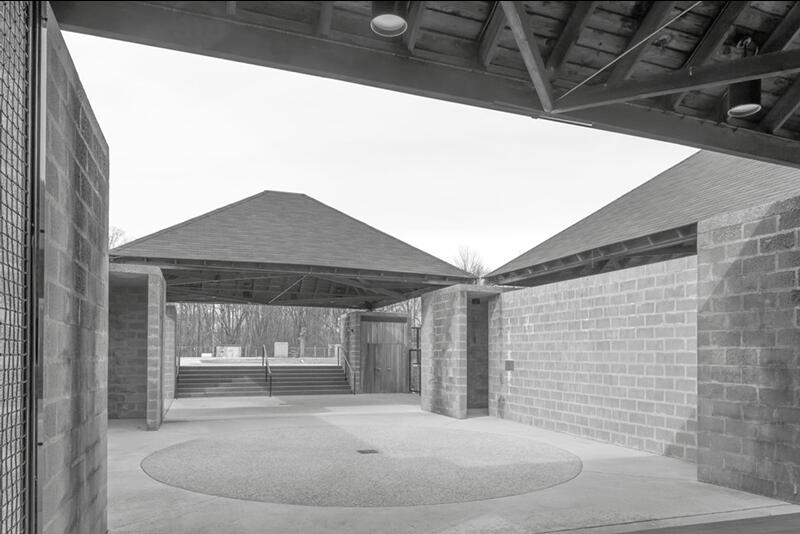
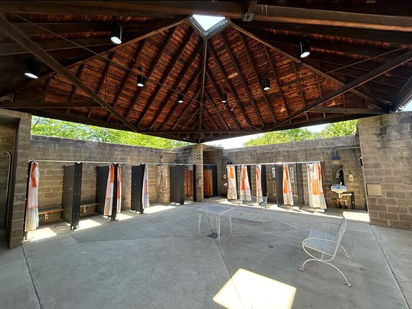
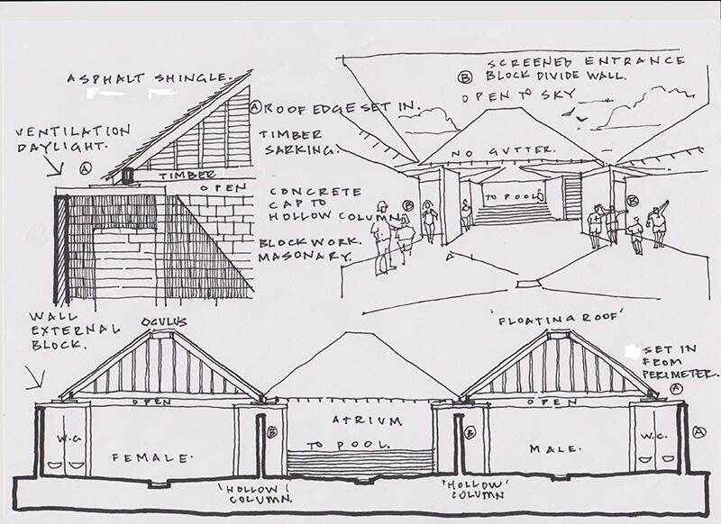
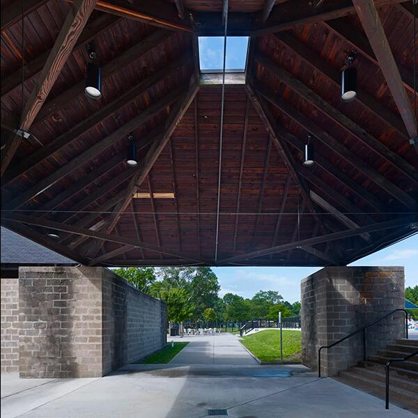
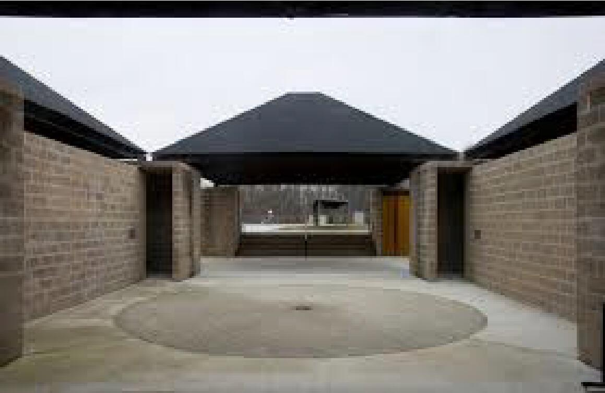
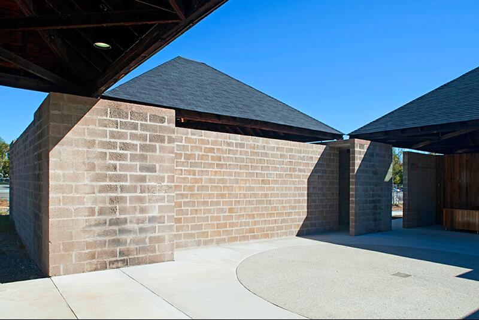
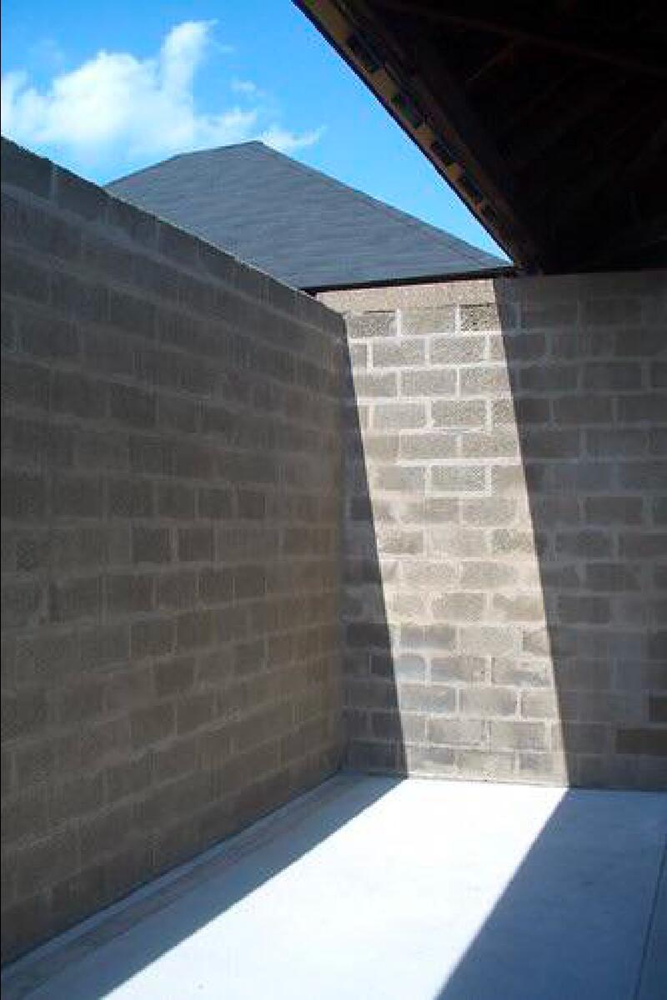
La densità materica come variabile percettiva
Nel Bath House, Trenton, Louis Kahn dimostra come la densità non sia un fatto volumetrico, ma un fenomeno percettivo che nasce dal rapporto tra materia, luce, peso atmosferico e ordine geometrico. L’architettura si presenta come un sistema primario: quattro padiglioni quadrati coperti da tetti piramidali sospesi sopra muri in blocchi di cemento. Questa semplicità apparente rivela, nella percezione, una complessità fatta di intensità e pesi distribuiti.
Le pareti in blocchi di cemento — materiali umili, economici, standard — diventano qui il luogo in cui la densità si manifesta come qualità dello spazio. Kahn li sceglie per la loro “ruvidezza antica”: non superfici astratte, ma materia che porta con sé un peso visivo, una gravità. I blocchi, volutamente non rifiniti, assumono l’aspetto di pietre primarie, capaci di restituire all’edificio una presenza quasi arcaica. La loro texture assorbe la luce invece di rifletterla, rendendo la massa più intensa e tangibile.
Il sistema dei “serviti” e “servizi” si materializza proprio attraverso queste pareti: le grandi colonne cave d’angolo, in blocchi di cemento, sostengono i tetti e ospitano gli spazi tecnici. La densità materica diventa così anche densità funzionale: ciò che costruisce la massa è ciò che costruisce l’ordine logico dell’edificio.
La luce zenitale è l’altra variabile che modula la densità. Il tetto staccato dai muri crea una sottile fessura continua: un gesto minimo che trasforma completamente la percezione. La luce filtra dall’alto, scava la materia, ne evidenzia la grana, e introduce un contrasto tra peso e gravità luminosa. La parete densa diventa superficie vibrante; la massa si fa atmosfera. In questa relazione si genera la qualità più profonda del Bath House, Trenton: una architettura che appare pesante e leggera allo stesso tempo.
Lo scorrere dell’acqua piovana sulle superfici — elemento che Kahn aveva immaginato come parte del processo estetico — accentua nel tempo questa densità, marcando le pareti con striature e patine che rendono il materiale ancora più “presente”. Il restauro ha dovuto replicare questo carattere, confermando che la densità non è decorazione, ma identità percettiva.
In sintesi, nel Bath House, Trenton la densità è una variabile attiva: nasce dalla materia, si trasforma con la luce, struttura lo spazio e ne determina il comportamento. È la dimostrazione che un edificio minimo può diventare un laboratorio essenziale della percezione architettonica.
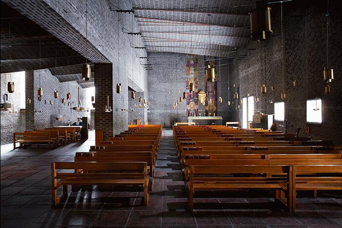
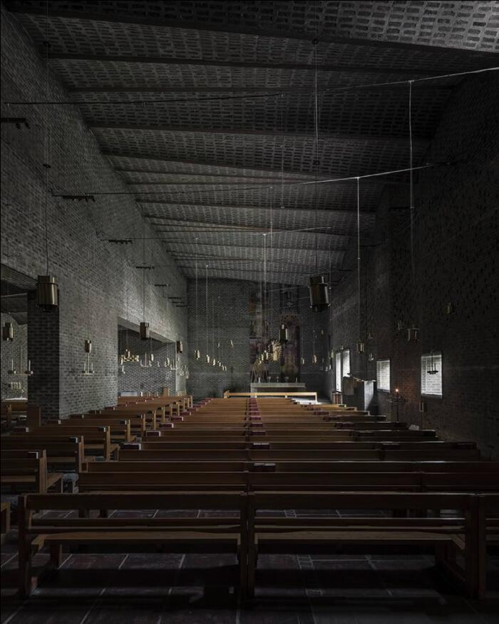
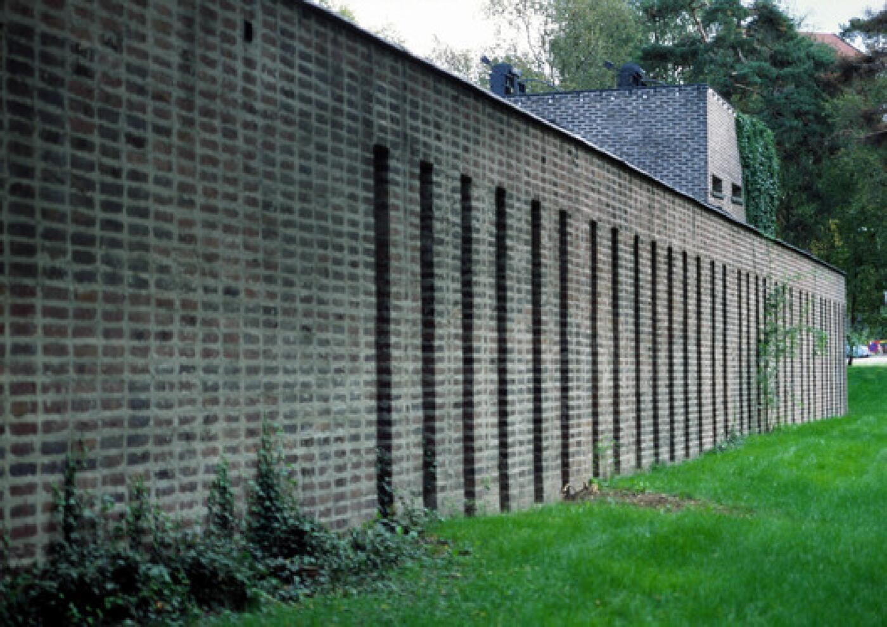
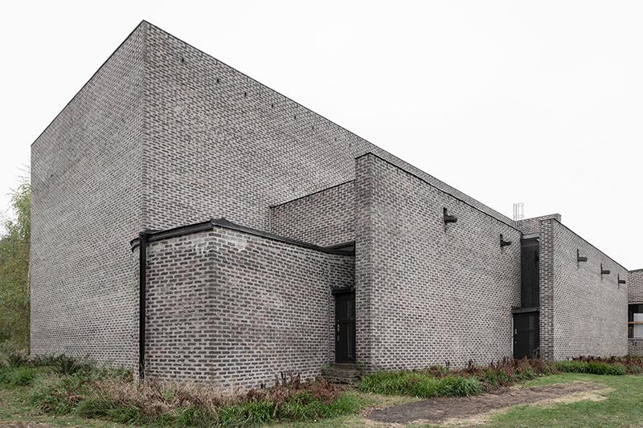
Nella chiesa di St. Mark a Björkhagen, Sigurd Lewerentz costruisce una delle definizioni più radicali di densità luminosa nella storia dell’architettura del Novecento. La densità, in questo caso, non nasce dalla massa o dai volumi, ma dalla relazione intensa tra luce, materia e percezione: è la qualità sensibile con cui lo spazio esercita pressione percettiva sul corpo.
Lewerentz capovolge la tradizione delle chiese occidentali, che affidano alla luce zenitale o diffusa il ruolo di alleggerire lo spazio. Qui la luce è orizzontale, radente, bassa, filtrata da piccole aperture collocate quasi a livello del pavimento. È una luce che sfiora, che striscia sulle superfici; una luce che rivela più che illuminare.
Su questa luce minima agisce la matericità ruvida dei mattoni, posati a mano senza giunti visibili, con variazioni cromatiche e imperfezioni che la luce enfatizza invece di nascondere. Il risultato è uno spazio in cui il buio non è mera assenza, ma sostanza attiva: un contrappeso che intensifica la presenza della luce e ne rende percepibile la densità.
La chiesa non è luminosa, né oscura: è un luogo di contrasto controllato, di zone che emergono lentamente dal fondo, di masse che acquistano peso grazie alla luce anziché perdere peso per effetto della luce. L’atmosfera che ne deriva è rigorosa, contemplativa, quasi ascetica: una spiritualità costruita non con simboli, ma con spessore percettivo.
In questa architettura la densità luminosa diventa così una variabile progettuale: una forma di energia che plasma il campo, determina la qualità dell’esperienza e fa della luce un vero e proprio materiale costruttivo.
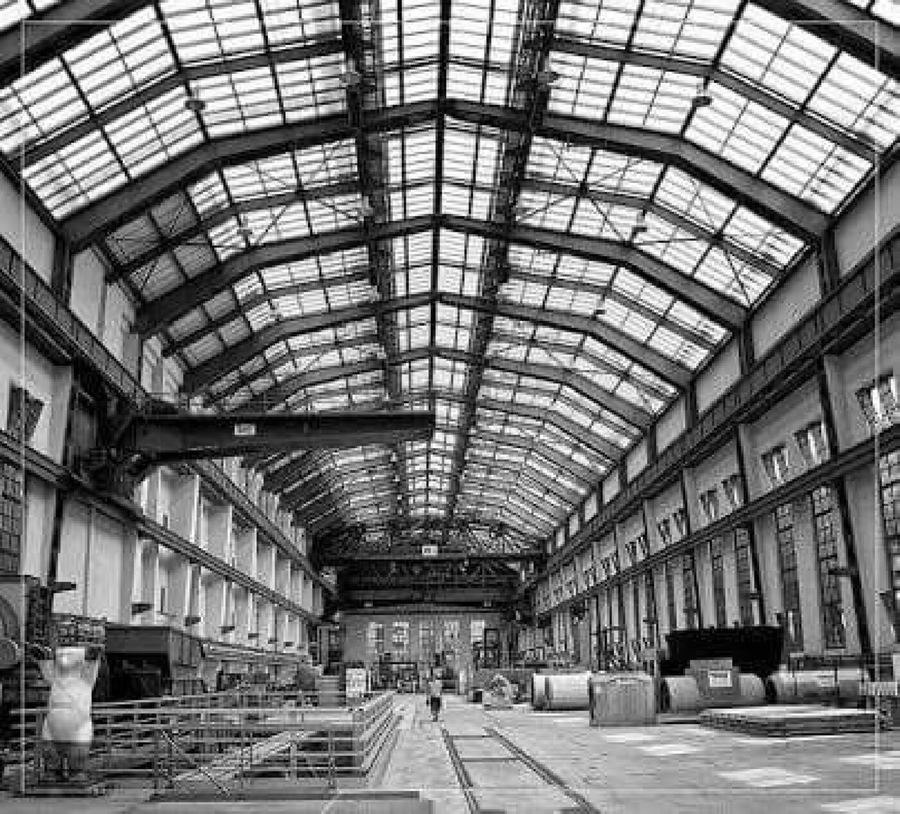
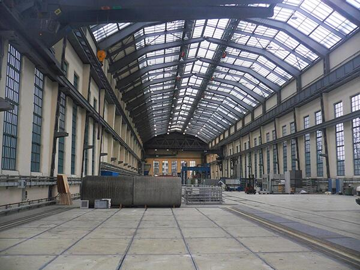
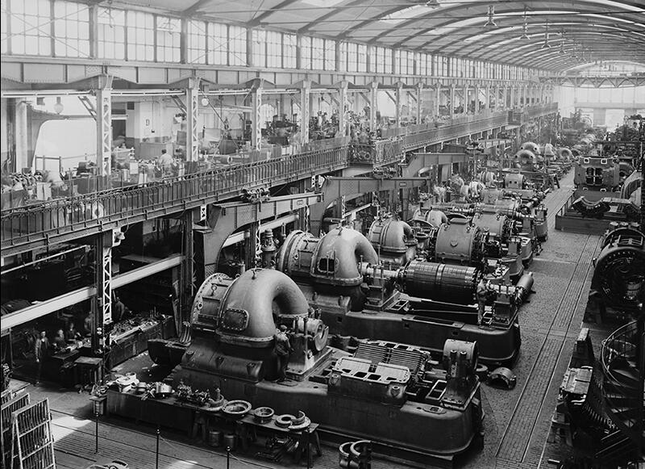
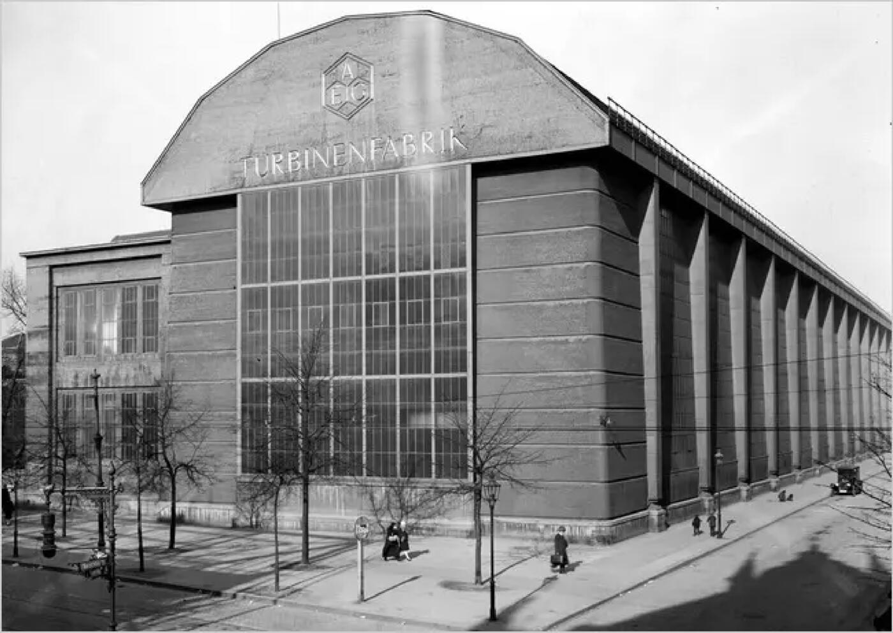
Densità atmosferica: lo spazio industriale come campo percettivo costruito da luce, struttura e massa
La AEG Turbinenfabrik di Peter Behrens non è soltanto un prototipo dell’architettura industriale moderna: è uno dei primi esempi in cui l’atmosfera di un grande spazio produttivo viene costruita attraverso il rapporto calibrato tra luce, struttura e massa. La “densità” qui non è un fatto materiale — l’edificio è leggero, fatto di acciaio e vetro — ma una qualità percettiva prodotta dalla scala, dalla luce filtrata e dalla monumentalità controllata.
L’enorme navata, alta quasi 25 metri, non appare come un semplice contenitore funzionale: si percepisce come un campo unitario, un volume attraversato da una luce grigia, diffusa, che scivola lungo i montanti metallici e ne sottolinea la ripetizione ritmica. Le pareti vetrate inclinate, sostenute da telai d’acciaio perfettamente leggibili, creano una luminosità uniforme, atmosferica, che avvolge l’interno in una sorta di “foschia industriale”. È questa luce filtrata, continua, a costruire la densità atmosferica dello spazio: non un pieno, ma un peso dell’aria determinato dalla relazione tra struttura e illuminazione.
La massa non deriva dal materiale, ma dal simbolismo della forma: il grande frontone cementizio — più gesto rappresentativo che elemento strutturale — introduce una gravità visiva che contrasta con la leggerezza dei fianchi vetrati. È in questo equilibrio tra pesante e leggero, tra trasparenza e monumentalità, che l’edificio produce la propria atmosfera densa.
Behrens crea così il primo “tempio dell’industria”: un luogo in cui la densità non è quantitativa, ma qualitativa; non deriva dal costruito, ma dalla percezione dello spazio come energia, ritmo e presenza. Un precedente fondamentale per comprendere la densità atmosferica come variabile progettuale.